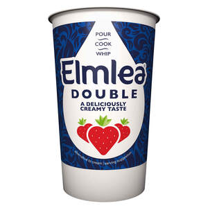

Trade Mark Journal No.2025/031 1 August 2025
UK00004236888 21 July 2025 (29)

- Class 29
- Meat, fish, poultry and game; meat extracts; preserved, frozen, dried and cooked fruits and vegetables; jellies, jams, compotes; eggs; milk and milk products; oils and fats for food; spreads; fruit, nut, cheese, cream cheese and plant-based spreads; dairy products and dairy substitutes; dairy spreads; dairy-based spreads; low fat dairy spreads; non-dairy spreads; butter; butter preparations; butter substitutes; concentrated butter; blended butter; savoury butters; seed butters; butter made from nuts; cocoa butter; powdered nut butters; margarine; margarine substitutes; edible fat-based spreads for bread; cream; sour cream; cream powder; artificial cream (dairy product substitutes); cream alternatives and substitutes; non-dairy milk and cream; edible oils and fats; cooking oils; nut oils; vegetable oils for food; coconut oil and fat for food; animal oils for food; edible oils derived from fish [other than cod-liver oil]; soya bean oil for food; seed oils for food; flavoured oils; olive oils; spiced oils; butter oil; blended oils for food; hydrogenated oils for food; hardened oils; clarified butter; butter for use in cooking; ghee; dips; dairy-based dips; meat substitutes; vegetable and plant- based meat substitutes; meat spreads; meat-based spreads; meat-based snack foods; vegetable spreads; vegetable-based spreads; vegetable- based snack foods; cheese spreads; cheese-based snack foods; nut paste spreads; nut-based spreads; spreads consisting mainly of fruits; coconut spreads; coconut-based chocolate spreads; orange spreads; coconut flavoured spreads; cherry spreads; banana spreads; rice milk based spreads; fruit-based snack food; fruit snacks; dairy-based beverages; drinks made from dairy products; protein milk; cream, being dairy products; non-dairy creamer; dairy whiteners for beverages; milk powder for nutritional purposes; dairy-based whipped topping; dairy puddings and desserts; yoghurt; yoghurts; yoghurt beverages and drinks; yoghurt-based beverages and drinks; drinking yoghurt; yoghurt dessert; soya yoghurt; flavoured yoghurt; custard-style yoghurts; low fat yoghurt; preparations for making yoghurt; yoghurt made with goats milk; milk products; butter milk; butter cream; milk; milkshakes; sour milk; milk curds; flavoured milks; milk solids; dried milk; milk powder; soya milk; milk beverages and drinks; milk based beverages and drinks; flavoured milk beverages and drinks; milk beverages, milk predominating; rice milk; sheep milk; goat milk; cows' milk; fermented milk; evaporated milk; curdled milk; condensed milk; albumin milk; oat milk; milk substitutes; milk-based snacks; kefir; kumiss [milk beverage]; hemp milk used as a milk substitute; artificial milk based desserts; almond milk; coconut milk; peanut milk; hazelnut milk; cashew milk; nut milks; snack foods based on nuts; fruit and nut-based snack bars; nut and seed-based snack bars; snack foods based on legumes; tofu-based snacks; soya based snacks; snacks of edible seaweed; protein-based snacks; vegan cheese; vegan cream; vegan cream cheese; cheese substitutes made of vegetable oils; non-lactose cheese made of vegetable oil; yoghurt with fats of plant origin; yoghurt dessert with fats of plant origin; spreads with fats of plant origin; milk substitutes with fats of plant origin; desserts based on milk substitutes; butter and margarine substitutes with fats of plant origin; cream substitutes with fats of plant origin; formed textured vegetable protein for use as a meat substitute; soya-based beverages used as milk substitutes; milk-based beverages; rice milk-based beverages; milk substitute based beverages; milk-based beverages flavored with chocolate; rice milk-based beverages flavored with chocolate; milk substitute based beverages flavored with chocolate; prepared meals consisting principally of vegetables and meat substitutes.
Flora Food Global Principal B.V.
Representative: Stobbs